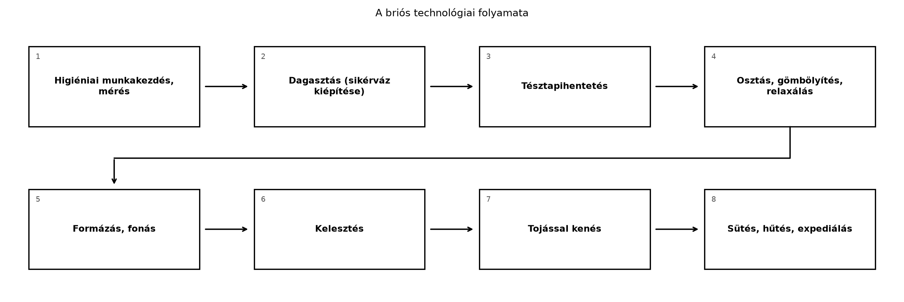

Egy cukrászüzemben a reggeli műszak gyakran az élesztős tésztákkal indul: briós, kalács, kuglóf vagy fánk készül. A vendég ugyanazt az élményt várja, mint egy jó pékségben: könnyű, szálas bél, vékony kéreg, friss illat. Ha a cukrász csak a receptet nézi, de nem érti, mi a különbség a dagasztással készült briós és a keveréssel készült kuglóf tészta között, könnyen túldagasztott, rágós vagy éppen lapos, összeesett termék születik. Ebben az alfejezetben a két legfontosabb élesztőstészta-családot, a gyúrt és a kevert élesztős tésztákat tanuljuk meg, konkrét termékeken: brióson, kalácson, kuglófon és fánkon.
A briós akkor lesz szálas, fonható és rugalmas, ha a liszt sikérvázát dagasztással kiépítjük. A kuglófnál és fánknál lágyabb, kevésbé dagasztott tésztát használunk, mert a sok folyadék, vaj, tojás és cukor már önmagában is lágyítja a tésztát. Az alábbi folyamatábra a briós készítésének fő lépéseit mutatja; a kuglófnál és fánknál rövidebb dagasztás és lágyabb tészta szerepel.

Definíció. Gyúrt élesztős tészta: olyan élesztővel lazított tészta, amelyben a liszt sikérvázát viszonylag intenzív dagasztással építjük ki. A tészta inkább közepesen kemény, jól nyújtható, formázható. Tipikus termékek: briós, fonott kalács, csiga, bukta, élesztős uzsonnasütemények.
Definíció. Kevert élesztős tészta: olyan élesztővel lazított tészta, amelyet hosszú, intenzív dagasztás helyett rövidebb keveréssel homogenizálunk. A tészta lágyabb, kevésbé feszes, gyakran több tojást, vajat, tejet és cukrot tartalmaz. Tipikus termékek: kuglóf, fánk, egyes kelesztett kalácstészták, lágy élesztős tészták.
A két család közötti különbséget az alábbi táblázat foglalja össze.
| Jellemző | Gyúrt élesztős tészta | Kevert élesztős tészta |
|---|---|---|
| Sikérváz | erős, dagasztott | gyengébb, lazán kiépített |
| Tészta állaga | közepesen kemény, rugalmas | lágy, keverhető |
| Jellemző folyadék | kevesebb, 40–55% a lisztre | több, 55–80% a lisztre |
| Zsiradék, tojás, cukor | mérsékelt | gyakran magasabb |
| Fő művelet | dagasztás | keverés |
| Jellemző termék | briós, kalács, zsemle | kuglóf, fánk |
Az arányok tájékoztató jellegűek; a liszt minősége és a receptúra befolyásolja őket.
Szabály. Az élesztős tésztát mindig a tészta hőmérsékletével szabályozzuk. A gyúrt tészták optimális kész tésztahőmérséklete tanulási célként kb. 26–28 °C, a lágyabb kevert tésztáké hasonlóan 26–28 °C, de a receptúrától függően eltérhet (ellenőrizendő: üzemi technológiai előírás, gyártói adatlap).
A briós tészta a gyúrt élesztős tészták iskolapéldája. Lényege, hogy a liszt sikérhálója feszes, mégis rugalmas legyen. A vaj, a tojás és a tej lágyítja a tésztát, ezért a vajat nem szabad túl korán vagy egyszerre, hidegen nagy darabban hozzáadni.
A briós tipikus felépítése:
A brióst leggyakrabban spiráldagasztóban vagy univerzális konyhagép dagasztókarral készítjük. A gépi munka alapelveit a(z) Előkészítő és tésztakészítő gépek: dagasztógép, univerzális konyhagép, aprítók alfejezetben tanultuk.
Technológiai fogás. Először a liszt, a cukor, a só, a tej, a tojás és az élesztő egy részét keverjük lassú fokozaton. Amikor a tészta összeállt, a dagasztás közepes fokozaton feszesíti a sikérvázat. Csak ezután adjuk hozzá a puha vajat fokozatosan. A kész tészta elválik az üst falától, fényes, rugalmas, és vékony hártyává nyújtható, anélkül hogy azonnal szakadna.
Hiba. Ha a vajat a sikérváz kialakulása előtt adjuk hozzá, a zsiradék bevonja a sikérszálakat, és a tészta nem tud feszes vázat kialakítani. A briós lapos, tömör lesz.
A fonott kalácshoz ugyanolyan gyúrt élesztős tésztát használunk, mint a brióshoz. A különbség inkább a formázásban van.
Fonás alapjai három szállal:
A fonás során ne húzzuk túl a szálakat, mert a sütésnél a tészta elszakadhat, és a kalács deformálódik. A fonatot úgy helyezzük a sütőlemezre, hogy a toldás alulra kerüljön.
Az alábbi képsor felülnézetből mutatja a háromszálas fonást: a szálakat szürkeárnyalat és betűjel különbözteti meg, a mozgó szálat nyíl jelöli. A HTML-kiadásban a lépések egyenként léptethetők, és kiegészítésként egy négyszálas lapos fonás is megnézhető.
Miért? A fonás több vékony tésztaszálból alakít ki nagyobb felületet. A sütésnél így szép kéreg, egyenletes bél és mutatós forma alakul ki.
A kuglóf tészta lágyabb, mint a briós, de nem teljesen folyós. A magasabb vaj-, cukor- és tojástartalom miatt a tésztát nem dagasztjuk erőteljesen. Elég, ha az alapanyagok egyenletesen elkeverednek, és a sikérváz éppen annyira kiépül, hogy a tészta megtartsa a gázbuborékokat.
Technológiai fogás. A kuglófformát vajjal kenjük, majd kevés liszttel, zsemlemorzsával vagy apróra vágott mandulával szórjuk. A formát legfeljebb kb. harmadáig–feléig töltjük, mert a tészta a kelesztés és a sütés során jelentősen megnő. A kuglófot mérsékelt hőmérsékleten, kb. 170–180 °C-on sütjük, hogy a magasan lévő tészta közepe is átsüljön (ellenőrizendő: recept és sütőtípus szerinti hőfok).
A fánk tészta az egyik leglágyabb kevert élesztős tésztánk. A tészta sok folyadékot, tojássárgáját és vajat tartalmaz, ezért könnyen ragad, és nem szabad túldolgozni. A fánk formázása után a tésztadaraboknak kelesztésre van szükségük, mielőtt forró zsiradékba kerülnek.
Figyelem. A 170–180 °C-os zsiradék súlyos égési sérülést okoz. A sütőedényt legfeljebb a jelzésig (kb. félig) töltsd, a darabokat szűrőkanállal, testedtől elfelé engedd bele, vizes vagy jeges darabot ne tegyél bele (kifröccsen). Hőmérővel ellenőrizd a hőfokot, a forró olajat ne hagyd felügyelet nélkül. Égő olajat soha ne olts vízzel: kapcsold le a hőforrást, takard le fedővel vagy tűzoltó takaróval, üzemben F osztályú tűzoltó készüléket használj (ellenőrizendő: OTSZ és az üzemi tűzvédelmi utasítás). Viselj hosszú ujjú munkaruhát és hőálló kesztyűt; a tanuló csak felügyelettel süt.
Kritikus pont. A fánkot nem szabad hideg vagy túl forró olajba tenni. Az optimális sütési hőmérséklet tanulási célként kb. 170–180 °C. Ha az olaj hidegebb, a tészta sok zsiradékot szív magába; ha forróbb, a fánk kívül megég, belül nyers marad (ellenőrizendő: üzemi hőmérsékletmérés, zsiradék gyártói adatai).
Az élesztős tészták feldolgozása mindig azonos logikát követ.
Miért gömbölyítünk? A gömbölyítés rendezett, feszes felületet hoz létre. Így a sütésben a tészta egyenletesebben tartja meg az alakját, és nem reped fel szabálytalanul.
1. számítási feladat – briós receptúra nagyítása
Adott az alábbi tanulási briósrecept 1 tételre, kb. 24 db-ra, nyers darabonként kb. 80 g-ra. (Megjegyzés: ez a mérsékelten vajas, tejes tészta a hazai üzemi gyakorlatban briós jellegű vajas kalácstészta; a francia típusú brioche vajtartalma jóval nagyobb, a liszthez viszonyítva jellemzően 40–60% – ellenőrizendő: szakkönyvi receptúra.)
| Nyersanyag | Mennyiség (g) |
|---|---|
| BL55 liszt | 1 000 |
| tej | 450 |
| tojás | 180 |
| friss élesztő | 40 |
| cukor | 100 |
| vaj | 120 |
| só | 15 |
| citromhéj | 3 |
| Összesen | 1 908 |
Készítsünk 30 db, azonos darabtömegű brióst. Keressük az új anyaghányadokat.
Adott: , .
Keresett: szorzószám és az új mennyiségek.
Képlet:
Behelyettesítés:
Számított mennyiségek:
Ellenőrzés: az új összes tömeg . A 30 db nyers darabtömege , tehát azonos a kiinduló darabtömeggel. ∎
2. számítási feladat – sütési veszteség és szükséges nyers tészta
Adott: a briós nyers darabtömege , a kész briós átlagos tömege . Hány kg brióstésztát kell bekészítenünk 100 db, legalább 60 g-os kész brióshoz?
Lépés 1: veszteség kiszámítása
Lépés 2: szükséges nyers darabtömeg 60 g kész tömegnél
Azt akarjuk, hogy a kész darab legalább legyen.
Lépés 3: összes tésztaigény
Ellenőrzés: ha 100 db nyers brióst készítünk, egyenként 76,2 g tömeggel, és 21,25% veszteséggel sül, akkor a késztermék várható tömege . A tétel teljesíti a 60 g-os késztermékcélt. ∎
Jogszabály. Az élesztős termékek előállítása vendéglátó-üzemi élelmiszer-előállításnak minősül, ezért a 852/2004/EK rendelet és a kapcsolódó magyar élelmiszer-higiéniai előírások szerint kell kialakítani a tisztítás, kézmosás, nyersanyag-átvétel és hőkezelés rendjét (ellenőrizendő: hatályos nemzeti útmutató és NÉBIH tájékoztató). A briós, kalács, kuglóf és fánk glutént, tojást és tejet tartalmazhat. Az összetevőket a fogyasztók tájékoztatásáról szóló 1169/2011/EU rendelet szerint kell jelezni; az étlapon, címkén vagy csomagoláson az allergéneket fel kell tüntetni. Az allergének pontos listáját a jogszabály II. melléklete tartalmazza (ellenőrizendő: aktuális szöveg).
Higiénia. Minden tétel indításakor ellenőrizzük a tojás frissességét, a tej hőmérsékletét, a vaj és az élesztő szavatosságát. A tojás feltörése után azonnal mossunk kezet, és a tojáshéjjal érintkező felületet fertőtlenítsük. A fánk sütéséhez csak tiszta, erre alkalmas zsiradékot használjunk. A használt sütőzsiradékot nem használhatjuk korlátlan ideig; a gyártó tájékoztatója és a sütőüzemi gyakorlat szerint kell cserélni (ellenőrizendő: gyártói adatok).
Tilos. Romlott vagy idegen szagú tojást, tejet, vajat felhasználni. Túlkelt, összeesett tésztát úgy értékesíteni, mintha megfelelő lenne. A fánk olaját füstölésig hevíteni, mert tűzveszélyes és káros égéstermékek keletkeznek. A kiolvadt vagy nyers fánktésztát szobahőmérsékleten hosszabb ideig tárolni.
Cél: a tanuló készítsen el egy tétel brióst, és a tészta egy részéből formázzon fonott kalácsot. Az útmutató egyben teljes technológiai lap is.
Eszközök és anyagok: spiráldagasztó vagy univerzális konyhagép dagasztókarral, digitális mérleg, tésztakaparó, sütőlemez, fényező ecset, kelesztőszekrény vagy meleg tér, a technológiai lap szerinti nyersanyagok.
Higiéniai munkakezdés: munkaruha, hajháló, ékszer nélkül, kézmosás; az üst és a dagasztószerszám tiszta, száraz; a mérleg és a sütőlemez élelmiszerrel érintkező felülete tiszta. A tojást közvetlenül felhasználás előtt, tiszta felületen törjük fel (az A osztályú tojást ne mossuk; ellenőrizendő: 589/2008/EK, tojás-forgalmazási szabályok), a tejet hűtve tároljuk.
Biztonsági korlát. A dagasztógépet csak oktatás után, felügyelet mellett kezeljük. A gép védőrácsa nem iktatható ki; a tésztába csak leállítás után nyúlunk. Otthoni gyakorlásnál háztartási gépet, kis adagot használjunk.
Technológiai lap.
Termék neve: vajas briós és fonott kalács.
Termékcsoport: gyúrt élesztős tészta (hazai,
tejes-vajas „briós” tanulási recept; a francia brioche sokkal vajasabb,
ellenőrizendő).
Alapmennyiség: 1 tétel, kb. 24 db briós, nyers
darabtömeg kb. 80 g.
Anyaghányad táblázat:
| Nyersanyag | Mennyiség (g) | Arány (%) | Megjegyzés |
|---|---|---|---|
| BL55 liszt | 1 000 | 100 | szitálva |
| tej | 450 | 45 | 28–30 °C |
| tojás | 180 | 18 | kb. 3,6 db közepes tojás (kb. 50 g/db; ellenőrizendő: tömegosztály) |
| friss élesztő | 40 | 4 | elmorzsolva |
| cukor | 100 | 10 | kristálycukor |
| vaj | 120 | 12 | lágy, kockázott |
| só | 15 | 1,5 | finom |
| citromhéj | 3 | 0,3 | reszelt |
| Összesen | 1 908 | 190,8 | a liszt tömegére vetítve |
Eszközök: dagasztógép, mérleg, tésztakaparó, sütőlemez, ecset, hűtőrács, kelesztőtér, maghőmérő.
Műveleti sorrend:
Mérjük ki az alapanyagokat; a lisztet szitáljuk.
Az üstbe tegyük a lisztet, a cukrot, a sót, a tejet, a tojást és az élesztőt.
Keverjük lassú fokozaton, amíg a tészta összeáll.
Dagasszuk közepes fokozaton, amíg a tészta fényes, rugalmas lesz.
Fokozatosan adjuk hozzá a lágy vajat.
Dagasszuk tovább, amíg a tészta az üst falától elválik, és vékony hártyává nyújtható.
A tésztát fedjük le, és pihentessük kb. 30–45 percig, hogy a sikér lazuljon.
Oszuk el a tésztát a kívánt darabokra. Brióshoz kb. 80 g-os darabok; kalácshoz a kívánt fonat tömegére osszuk.
Gömbölyítsük a darabokat, majd fedve pihentessük kb. 10–15 percig.
Formázzuk a briósokat csigává, vagy sodorjunk 3–6 egyenlő szálat a fonott kalácshoz.
Kelesszük a formázott darabokat kb. 28–32 °C-on, magas páratartalom mellett, amíg a térfogat kb. 1,5–2-szeresére nő (ellenőrizendő: üzemi kelesztési idő és hőfok).
Kenjük le a briós és kalács tetejét lazán felvert tojással.
Süssük a brióst kb. 190–210 °C-on, a fonott kalácsot kb. 180–190 °C-on, a közepén mérhető maghőmérséklet kb. 92–96 °C legyen (ellenőrizendő: termékrecept, sütő kalibráció, üzemi HACCP-terv).
Hűtsük rácsra, hogy a bél ne párásodjon.
Kritikus pontok és kulcspontok:
| Lépés | Veszély | Megelőzés | Kritikus határ (tanulási példa) | Monitorozás | Helyesbítés | Dokumentum |
|---|---|---|---|---|---|---|
| Kelesztés | kórokozók felszaporodhatnak túl meleg térben | szabályozott hőmérséklet, idő | 28–32 °C, túlkelesztés elkerülése | hőfok-idő napló | túlkelt tésztát nem értékesítünk, selejtezés | kelesztőnapló |
| Sütés | nyers belső mag miatt nyers tojás/tej-maradék | elegendő maghőmérséklet | mag kb. 92–96 °C (ellenőrizendő: terméktáblázat, HACCP-terv) | maghőmérő | utánsütés, ha lehetséges, vagy selejtezés | hőkezelési napló |
| Hűtés | páralecsapódás, másodlagos szennyeződés | rácsra hűtés, tiszta edény | gyors hűtés, fedett tárolás | szemrevételezés | szennyezett termék kivonása | termékkilépési lap |
Allergének: glutén (búzaliszt), tojás, tej. Ha a műhelyben olajos magvakat, szezámot vagy más allergéneket is kezelünk, a keresztszennyeződéstől a szigorú elkülönítés, tisztított eszközök és a pontos tájékoztatás véd.
Minőségi jellemzők: a briós felülete aranysárga, fényes; alakja szabályos; metszete lágy, szálas; a kalács fonata egyenletes; a bél elválik, nem ragad; az íz enyhén vajas, tojásos.
Tárolás, eltarthatóság: kihűlés után zárt süteményes dobozban, szobahőmérsékleten fogyasztható rövid időn belül; a pontos eltarthatóságot az üzemi HACCP és a receptúra szerint kell meghatározni (ellenőrizendő: üzemi gyakorlat). Távolítsuk el a nem ehető dekorációt vagy csomagolóanyagot, és ne tüntessük fel élelmiszerként.
Második technológiai lap – kuglóf (kevert élesztős tészta). Az alábbi lap a kuglóf elkészítését gyakoroltatja; az anyaghányad tanulási recept (ellenőrizendő: szakkönyvi receptúra).
Termék neve: kuglóf (kevert élesztős tészta, mazsolás). Alapmennyiség: 1 db, kb. 2 literes kuglófforma, kb. 960 g nyers tészta.
Anyaghányad táblázat:
| Nyersanyag | Mennyiség (g) | Megjegyzés |
|---|---|---|
| BL55 liszt | 400 | szitálva |
| tej | 150 | langyos, 25–30 °C |
| friss élesztő | 20 | elmorzsolva |
| cukor | 80 | kristálycukor |
| tojás | 100 | 2 db közepes (kb. 50 g/db; ellenőrizendő: tömegosztály) |
| vaj | 120 | puha, 22–24 °C |
| só | 5 | finom |
| mazsola | 80 | leöblítve, lecsepegtetve |
| citromhéj | 2 | reszelt |
| Összesen | 957 | nyers tészta, sütés előtt |
Munkafolyamat:
Figyelem. A forró forma és a sütő égési sérülést okoz: hőálló kesztyűt használj, a formát ne tedd nedves felületre.
Kritikus pont és helyesbítés: sütés, maghőmérséklet kb. 92–96 °C (ellenőrizendő); ha a közepe nyers, utánsütés fóliával takarva a kiszáradás ellen, különben selejtezés. A lekelt, összeesett tésztát nem értékesítjük.
Allergének: glutén (búzaliszt), tojás, tej; a mazsola kén-dioxidot is tartalmazhat (ellenőrizendő: a gyártó adatlapja és az 1169/2011/EU szerinti jelölés). Ha mandulát szórsz a formába, diófélék. A keresztszennyeződést az elkülönített eszközök csökkentik.
Tárolás: kihűlés után zárt dobozban, szobahőmérsékleten rövid ideig; az eltarthatóságot a HACCP-terv határozza meg.
Fánk és kuglóf gyors fogásai: a fánk tésztáját keverőgéppel, rövid idő alatt homogenizáljuk; a tészta ragadós, ezért lisztezett deszkán dolgozunk. Szaggatás után kelesszük, majd a kelesztett darabokat forró, kb. 170–180 °C-os zsiradékba tesszük (a forró zsiradék veszélyeit lásd a Figyelem. bekezdésben a Fánktészta résznél). A kuglóf tésztáját lágyan keverjük, a formát legfeljebb feléig töltjük, majd kb. 170 °C-on sütjük (ellenőrizendő: recept és sütőtípus).
A briósnál és kalácsnál a tömegellenőrzés a legfontosabb. Ugyanabból a tételből 3–5 darabot mérjünk le a hűtés után, és hasonlítsuk a céltömeghez. Az érzékszervi vizsgálatnál nézzük a kéreg színét és vastagságát, a fonat szabályosságát, a bél pórusait és rugalmasságát. Kóstoljuk a só, a cukor és a vaj egyensúlyát.
A kuglófnál a forma a kritikus: magas, egyenletes, nem reped szabálytalanul, és a közepén nincs nyers tészta. A fánknál a külső kéreg legyen vékony, ropogós, a belső bél könnyű, a zsiradékfelszívás mérsékelt.
| Tünet | Ok | Megelőzés, javítás |
|---|---|---|
| A briós szakad, nem nyújtható | rövid, gyenge dagasztás; hideg vaj | dagasztási idő növelése, a vajat lágyan adagoljuk |
| A briós sülten lapos, tömör | túlkelesztés vagy kevés gőz | a kelesztést ellenőrizni, a kelesztő páráját növelni |
| A fánk olajos, elnehezült | alacsony olajhőmérséklet | a zsiradékot 170–180 °C-ra melegíteni, kisebb adagot sütni |
| A kuglóf közepe nyers | túl magas forma, túl rövid sütés, túl sok tészta | a formát csak harmadáig-feléig tölteni, alacsonyabb hőfokon tovább sütni |
Egy cukrászműhely szombat reggel 120 db brióst és 40 db fánkot készít. A brióst a cukrász először bekeveri, majd gépi dagasztást és pihentetést végez. Amíg a briós kel, a fánk tésztáját keveri. A fánk sütésénél az olaj hőmérsékletét óránként feljegyzi. Az egyik adag fánk olajos, mert a sütőzsír hőmérséklete a túl sok darab egyszerre történő berakásakor visszaesett 150 °C alá. A hiba gyorsan látszik: a fánk nehéz, a tálcán zsírgyűrű marad. A cukrász leállítja a sütést, a zsiradékot újra felmelegíti, és a hibás tételeket nem adja ki. Az eset mutatja, hogy a fánk technológiájában a hőmérsékletmérés nem adminisztráció, hanem minőségi döntés.
1. feladat (A): Írd le a briós készítésének műveleti sorrendjét a dagasztástól a sütésig.
2. feladat (A): Miért lazább, vajasabb a kuglóf tésztája, mint a briósé? Nevezz meg legalább két okot.
3. feladat (B): A briósrecept 24 db-ra szól. Számítsd ki a liszt és a vaj mennyiségét 36 db-ra.
4. feladat (B): A fánktészta sütéskor vizet párologtat, de olajat vesz fel. Egy nyers fánk 50 g, a kész fánk 52 g (tanulási adatpár; ellenőrizendő: szakirodalmi zsírfelvétel). Mennyi a tömegváltozás százalékban? Miért nem érdemes ezt a veszteséget egyszerű sütési veszteségként kezelni?
5. feladat (C): Az üzletben a briós kelés után, sütés előtt túlkelt. A tanuló szerint akkor is ki lehet sütni, mert „csak kicsit laposabb lesz”. Elemezd a döntést élelmiszerbiztonsági és gazdasági szempontból.
6. feladat (D): Készítsd el a gyakorlati útmutató alapján a brióst, és tölts ki egy technológiai lapot. A lap tartalmazza a felhasznált nyersanyagokat, a mért tésztahőmérsékletet, a kelesztési időt, a sütési hőmérsékletet és a kész briós átlagos tömegét.
1. feladat megoldása: A briós tésztát mérés után dagasztjuk, pihentetjük, elosztjuk, gömbölyítjük, rövid relaxálást adunk, formázzuk, kelesztjük, tojással lekenjük, sütjük, majd rácsra hűtjük. A vajat a dagasztás vége felé, fokozatosan adagoljuk.
2. feladat megoldása: A kuglóf tésztája több vajat, tojást, cukrot és folyadékot tartalmaz, ezért kevésbé feszes. A gyengébb dagasztás miatt a sikérváz lazább, a morzsa puhább, enyhén tömöttebb.
3. feladat megoldása: A szorzószám:
Liszt:
Vaj:
Az új tészta összesen
.
4. feladat megoldása: Ez növekedés, nem veszteség. A fánk olajat vesz fel, ezért nem használható a sütési veszteség szokásos képlete; a termék tömegmérlegében a zsiradékfelvételt külön kell kezelni.
5. feladat megoldása: A túlkelt briós szerkezete összeeshet, sütés közben elnyílik, a bél tömör lesz. Élelmiszerbiztonsági szempontból a túl hosszú meleg kelesztés növelheti a kórokozók szaporodásának kockázatát, mert a tojás- és tejalapú tészta nedves, élesztővel élő rendszer. A hibás tételt nem szabad jó termékként kiadni; legfeljebb technológiai próbaként lehet kiértékelni, és a tanulságot dokumentálni.
6. feladat megoldása: A gyakorlati feladat értékelésénél nézd, hogy a tanuló betartotta-e a higiéniát, a dagasztási sorrendet, a tészta hőmérsékletét, a kelesztési időt és a sütési hőmérsékletet. A kész briósnak aranysárgának, rugalmasnak, szálasszerű bélűnek kell lennie. A technológiai lapon az anyaghányadnak, a hőmérsékleteknek és az átlagos kész tömegnek is szerepelnie kell.
A gyúrt élesztős tészta, például a briós és a fonott kalács, erős sikérvázat és rugalmas, formázható tésztát ad. A dagasztás gép nélkül is lehetséges, de géppel egyenletesebb. A leggyakoribb hibákat leginkább a rossz dagasztási sorrend és a hideg vaj okozza. A kevert élesztős tészta, például a kuglóf és a fánk, lágyabb; itt a keverés rövidebb, és a hangsúly a kelesztésen, formázáson és a hőfokon van. A fánk sütésénél a zsiradék hőmérsékletének ellenőrzése elengedhetetlen. Az osztás, gömbölyítés, pihentetés és alakítás minden kelt tésztánál azonos alapművelet. A termékekben közös allergén lehet a glutén, a tojás és a tej. A sütési biztonság érdekében a briós belső maghőmérsékletét tanulási célként kb. 92–96 °C-ra kell emelni (ellenőrizendő: recept és üzemi utasítás).
Továbbvitt eredmény. Az itt megtanult briós- és kuglóftésztát, valamint az osztás-gömbölyítés-pihentetés-formázás műveletrendet használjuk a Hajtogatott élesztős tészták, az Omlós élesztős tészták és élesztős tésztahibák és a Gyúrt és kevert élesztős uzsonnasütemények; a fánk alfejezetekben.